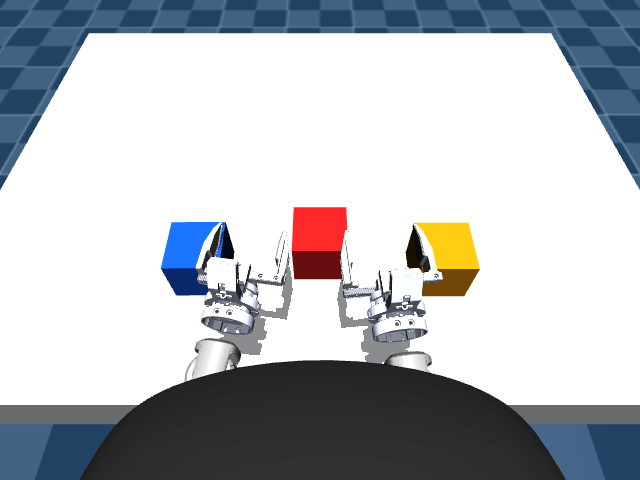
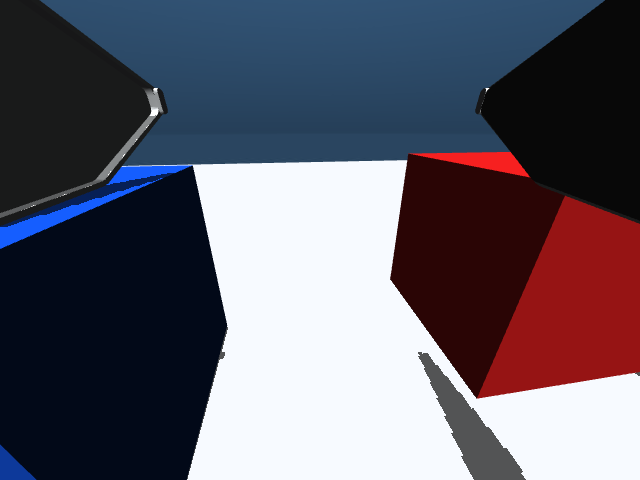
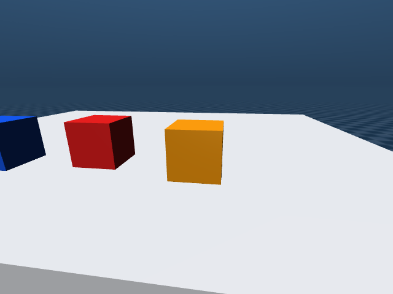

只验证以后能部署到 G1 EDU 的链路。
唯一目标是固定站立的 Unitree G1 Education + 双 Dex1 上肢操作。MuJoCo 与未来真机必须共享相机输入、16-D pelvis-frame EEF contract、安全拒绝、IK、14 关节顺序和 Dex1 方向；不兼容的机器人 action、过渡模型和 transport mock 已移出主流程。
G1 专用 Gate 完成度
唯一系统边界
模拟器不是另一套机器人；它只是 G1 EDU I/O 的可替换实现。
保留什么
每个模块都必须能原样复用于真机，或明确是 MuJoCo/硬件边界实现。
Policy Contract
图像 keys、RGB 预处理、state/action 逐维顺序、pelvis frame、xyzw、30 Hz、horizon 和 Dex1 范围。
Safety + IK
chunk validator、stale 拒绝、碰撞 preflight、EEF/Joint limits、双臂 IK、watchdog 状态机。
只替换 I/O
现在由 MuJoCo 读相机/状态和接收 joint target；以后只替换为 Unitree SDK 与真实相机。
当前 Gate
测试通过不等于 G1 真机安全。
| 区域 | 检查 | 状态 | 证据边界 |
|---|---|---|---|
| Robot | Unitree G1 Education 29-DoF model | 已验证 | MuJoCo Menagerie G1; policy scope excludes legs and torso |
| Hands | Official dual Dex1-1 geometry and mapping | 已验证 | 0 rad closed / 5.5 rad open; left/right mount tests pass |
| Contract | Frozen 16-D pelvis-frame EEF schema | 已验证 | g1_edu_dual_dex1_eef_v1 · 1.1.0 |
| Contract | MuJoCo state/action boundary round trip | 已验证 | pelvis frame, metres, xyzw, 50 mm wrist +X site |
| Observation | Three policy RGB streams | 已验证 | 640×480 RGB → center crop 480×480 → bilinear 224×224; shared preprocessing |
| Control | G1 dual-arm IK and ordered 14-joint target | 已验证 | same ordered joint list is frozen for the hardware adapter |
| Safety | EEF and joint command v/a/jerk filters | 已验证 | both are in the production-contract simulation path |
| Safety | Phase-aware reachability/collision preflight | 已验证 | exact-horizon contract fixture 50/50 accepted in grasp phase |
| Dynamics | G1 contract fixture baseline | 已验证 | finite, command limits pass, pelvis stable and endpoint below 35 mm |
| Adaptive | G1 far→near local behavior | 已验证 | 17 cm lift: far median/max 1.30×/1.60×; near 0.50×; path unchanged |
| Adaptive | Real LGG100 task-speed benefit | 阻塞 | real LGG100 calls=0 and deterministic adaptive run remains slower overall |
| Dynamics | Actual controller jerk | 部分完成 | MuJoCo position-actuator transient remains too large for a hardware-safety claim |
| Robustness | Mass/friction/object-position randomization | 已验证 | 20/20 existing scene-stability trials pass |
| CI | Ubuntu 22.04 headless G1 contract pipeline | 已验证 | GitHub Actions Run 31620798982: 24/24 + dynamics + cameras + contract SHA |
| Vision | Simulation-to-hardware camera calibration | 阻塞 | G1 EDU camera intrinsics/extrinsics, mounts and time sync not measured |
| Hardware | Official joint/torque/current limits | 阻塞 | must come from the exact G1 EDU controller and firmware |
| Hardware | Unitree feedback/command adapter | 待完成 | low-level state, hold, watchdog and communication-loss behavior not implemented |
| Policy | Production VLA selection | 部分完成 | LGG100/stack-cube-eef-24k selected at pinned revision cced7a… |
| Policy | LGG100 G1-contract eligibility | 阻塞 | real-weight loader exists, but unpublished semantics mean g1_contract_verified=false |
| Task | Closed-loop neural stack-cube trials | 待完成 | requires a G1-contract-verified policy; fixture motion is not task evidence |
| Robot | Shadow/HIL and staged G1 EDU run | 待完成 | hardware gates must pass before any action execution |
g1_edu_dual_dex1_eef_v1
版本 1.1.0 · SHA-256 9bf8a0ab404516df…
Observation
未来真机必须产生完全相同的 policy 输入。
| 字段 | 定义 | 真机要求 |
|---|---|---|
observation/cam_left_high | 640×480 RGB → center crop → bilinear 224×224 | 标定高位相机，不允许替换/复制腕相机 |
observation/cam_left_wrist | 同一共享预处理 → uint8 RGB [224,224,3] | 左腕真实安装位姿、时间戳、丢帧检测 |
observation/cam_right_wrist | 同一共享预处理 → uint8 RGB [224,224,3] | 右腕独立图像，不做镜像 |
observation/state[16] | 左 7 + 右 7 EEF pose + 双 Dex1 | pelvis frame；m；xyzw；rad |
prompt | 已训练 canonical instruction | 未知任务 fail-closed |
Action → G1 Joint Command
VLA 不控制腿、躯干或平衡。
| 维度 | 语义 | 单位/Frame |
|---|---|---|
| 0:3 | 左 EEF XYZ absolute target | m · pelvis |
| 3:7 | 左 EEF quaternion | unit xyzw · pelvis |
| 7:10 | 右 EEF XYZ absolute target | m · pelvis |
| 10:14 | 右 EEF quaternion | unit xyzw · pelvis |
| 14:16 | 左右 Dex1 motor target | rad · 0 closed / 5.5 open |
| IK output | 左 7 + 右 7 absolute joint target | rad · contract 固定顺序 |
G1 EDU Production-Path Regression
输入是 contract fixture，不伪装成 LGG100；输出链与未来 G1 相同。
8 cm Precision Fixture
17 cm Far→Near Coverage
Evidence Boundary
1.30× / 1.60×，近目标 0.50×，所以确定性 G1 路径做到了局部“该快时快、该慢时慢”。但 Adaptive 总用时仍比 baseline 多 0.422 s，且真实 LGG100 调用为 0；现在不能声称 LGG100 任务更快。只允许这一条 Simulation Gate
任何 policy 先证明 G1 contract，再获得 MuJoCo action 权限。
| Gate | 输入 | 验收 | 权限 |
|---|---|---|---|
| S0 Contract | YAML + validators | ID/SHA、图像、state/action、frame、joint order 全一致 | 测试 fixture |
| S1 Observation | MuJoCo 3 RGB + state | 与未来 G1 adapter 完全同 schema | Policy output-only |
| S2 Neural Offline | G1-verified checkpoint | finite [T,16]、norm、timing、fingerprint | 仍不执行 |
| S3 Preflight | 同一保存 chunk | 所有 target 的 IK、limit、collision 全过 | MuJoCo 低速 |
| S4 Closed Loop | 每个 replan 的真实 observation | 任务成功、无 stale、无 forbidden contact | 仅 MuJoCo |
| S5 Randomized | 相机/物体/摩擦/网络变化 | 预注册成功率与安全阈值 | 申请 Shadow |
g1_contract_verified=false、g1_action_compatible=false；完成语义验证前不允许把 chunk 送入 G1 dynamics。MuJoCo → G1 EDU Step-by-step
只列最终机器人会使用的交付物。
| Step | 具体工作 | 产物 | 停止条件 |
|---|---|---|---|
| D0 · Freeze | 冻结三相机、16-D state/action、EEF site、30 Hz、horizon、14 joint order | g1_policy_contract.yaml + validators | 任何模块 contract SHA 不同 |
| D1 · Hardware parity | 确定 G1 EDU firmware/SDK/control mode；测相机内外参、时间同步、EEF site；取得官方 limits | g1_hardware_profile.yaml + calibration | 型号、关节顺序、控制模式或 limits 不明确 |
| D2 · Dataset | 100 episodes 转换为冻结的 pelvis-frame 16-D contract；episode-level split；canonical prompt | OpenPI/LeRobot dataset + manifest + norm stats | 逐帧不可追溯、frame leakage、round-trip 失败 |
| D3 · LGG100 Restore | 固定 HF revision cced7a…，在 Ubuntu NVIDIA 上 strict Orbax restore；恢复/验证作者 transform 与 horizon | 真实 server metadata + model/config audit + golden sample | 参数树不完全匹配，或 action 语义仍无法验证 |
| D4 · Offline Gate | 真实 policy 只生成保存 chunk，不执行；验证 schema、时序、range、IK、碰撞 | lgg100_vla_smoke_real.json + fingerprinted NPZ | g1_contract_verified 不是 true |
| D5 · MuJoCo | 原速/低速 multi-chunk 闭环、随机化、网络 jitter、stale/断线 | 任务成功率 + failure replay | 安全/任务阈值任一不通过 |
| D6 · Shadow/HIL | G1 真实相机和 state 进入 policy；机器人保持 hold，只记录建议 action | 真机 parity/shadow logs | 时序、frame、相机域、EEF/joint 不一致 |
| D7 · Staged action | 硬 E-stop + 支撑：单臂 free-space → 双臂 → 桌面 → 轻物体 → 已训练任务 | operator checklist + run logs | watchdog、hold、通信中断、官方 limits 未独立通过 |
真机运行拓扑
Policy 可远程运行，但停止能力必须在 G1 本地。
LGG100 Policy Server
固定 revision 的真实 Orbax 权重；只接收冻结 observation，返回带 contract metadata/timestamp 的 16-D chunk；端口只走受控局域网或 SSH tunnel。
Realtime Supervisor
相机/状态同步、stale 拒绝、preflight、安全 limits、IK、watchdog、hold/E-stop；网络断开不依赖 GPU 才能停。
Official Controller
腿和平衡继续由官方控制器负责。上肢 joint target 必须经过准确 firmware/control-mode 的官方限制和反馈验证。
cced7a…并生成真实 output-only chunk；并行建立 exact G1 EDU hardware profile。LGG100 语义验证、真实 MuJoCo closed loop 和硬件安全 profile 缺一项，都不允许真机 action。三路 G1 Policy Observation
MuJoCo 当前渲染；真机必须用同 keys/shape/color order 替换。

cam_left_high
cam_left_wrist
cam_right_wrist关键文件
主链不再依赖其他机器人 action schema。
| 文件 | 职责 | 真机复用 |
|---|---|---|
g1_policy_contract.yaml | 唯一版本化语义 | 直接复用 |
g1_policy_contract.py | observation/action/metadata fail-closed validator | 直接复用 |
g1_mujoco_bridge.py | MuJoCo state/image 与 pelvis/world 边界 | 由 G1 hardware bridge 替换 |
safety_governor.py | preflight、EEF 和 joint command filters | 参数换成官方硬件 limits 后复用 |
g1_dual_arm_ik.py | 固定 14-joint 双臂 IK | 校准模型/反馈后复用 |
run_simulation.py | 完整 production-path contract regression | 进入真机前持续回归 |
g1_adaptive_phase_validation.py | 17 cm G1 far→near 加速/减速覆盖 | 真实 LGG100 chunk 到位后复用同一判定 |
验证历史
这里只记录 G1 仿真、contract、安全和部署主线；完整改动仍由 Git 审计。
24/24 项自动测试、G1 contract baseline/adaptive、17 cm far→near phase coverage 和三路相机渲染全部通过；真实 LGG100 调用仍为 0。
G1 EDU-only sim-to-real GitHub Actions Run 31620798982 已通过：Ubuntu headless 24/24、exact 50-step contract dynamics、三路 OSMesa、contract ID/SHA 与 artifact 全部成功。
24/24 项自动测试、G1 EDU contract baseline/adaptive 全链路和三路相机渲染全部通过。
Gate-A.2 提交的 GitHub Actions Run 31512781222 已通过：Ubuntu headless 17/17 测试、动力学、三路渲染、HTML 检查与 artifact 全部成功。
完成 Gate-A.2 recorded-policy proxy 验证：14-D 逐关节 P99 command filter 五档通过，phase-aware preflight free-space 44/68、grasp-policy 59/68，OOD 100% 拒绝；actual joint jerk 仍在 1.25× 出现 100k rad/s³ 尖峰，未宣称真实 VLA 或真机安全。
17/17 项自动测试、baseline/adaptive 动力学和三路相机渲染全部通过。
完成 comprehensive deep validation：100 episodes/95,966 帧数据审计、episode-0 全轨迹回放、250 个真实数据 IK 目标、1000 组宽域工作空间压力测试、Dex1 指尖/抓持、5 档 Gate-A.2 EEF/Joint 安全调速、168 个唯一 target 的 phase-aware preflight、30 秒动力学、20 组随机化、5 档外部扰动、三路视觉域对照及 Orbax metadata 审计。
Gate-A 提交的 GitHub Actions Run 31499342006 已通过：Ubuntu headless 15/15 测试、动力学、三路渲染、HTML 检查与 artifact 全部成功。